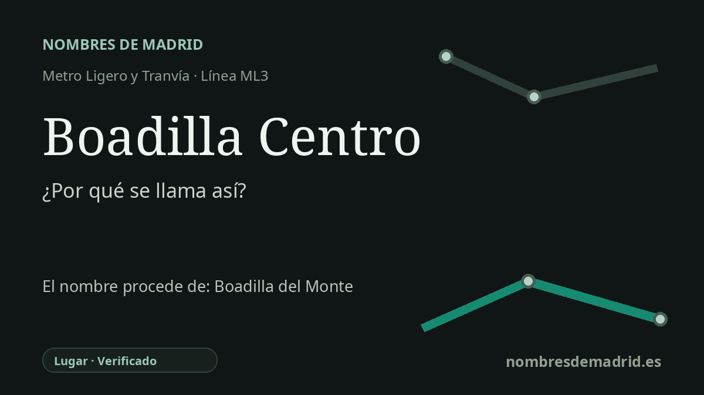

Publicado el · Investigación de Nombres de Madrid · Cómo verificamos cada origen · 6 fuentes consultadas
Respuesta rápida
Boadilla Centro recibe su nombre por estar junto a la zona comercial y el casco antiguo de Boadilla del Monte. El topónimo Boadilla pertenece a la difícil familia Boadilla/Bobadilla, quizá derivada de una voz relacionada con bóvedas o de un término ganadero vinculado a bueyes, y del Monte se añadió después para distinguir la localidad y aludir a su terreno arbolado y montuoso.
La historia del nombre
Boadilla Centro recibe su nombre inmediato por el lugar donde está la parada. Metro Ligero Oeste la sitúa en la línea ML3 junto a la carretera de Majadahonda, la M-516, cerca de las calles Alberca y José Antonio, y muy próxima a la zona comercial de Boadilla del Monte, al casco antiguo y a los centros comerciales El Palacio y Zoco.
El nombre más antiguo que hay detrás de la estación es Boadilla del Monte. Toponomasticon Hispaniae trata Boadilla como parte de una familia amplia de formas como Boadilla, Bovadilla y Bobadilla. Su ficha especializada no escoge una única etimología: plantea que el nombre puede proceder del germánico BÛWITHA, relacionado con bóvedas o construcciones arqueadas y quizá extendido a la descripción del paisaje, o del latino-romance BŎVĀTA, con el sentido de dehesa boyal o lugar de pasto de bueyes.
La segunda parte del nombre municipal es menos discutida. Toponomasticon indica que del Monte se añadió de forma oficial para evitar la homonimia con otras Boadillas y que alude al terreno montuoso en el que se encuentra la localidad. También señala que el Catastro de Ensenada todavía registraba el lugar en 1751 simplemente como Boadilla, mientras que el diccionario de Sebastián de Miñano ya empleaba en 1829 la forma Boadilla del Monte.
La historia local refuerza ese marco territorial. Toponomasticon afirma que Alfonso VIII incorporó el lugar al territorio de Madrid en 1208, y la historia municipal de José Montero Padilla cita documentos de 1208 con formas como Bovadella y Bobadilla. En el siglo XVIII el infante Luis Antonio de Borbón adquirió el señorío en 1761 y encargó a Ventura Rodríguez la transformación del antiguo conjunto palaciego en el Palacio del Infante Don Luis, uno de los hitos patrimoniales accesibles desde el centro y desde las paradas próximas de la ML3.
Para la estación, la evidencia es directa: Boadilla Centro es un nombre moderno y descriptivo, en servicio desde la apertura de Metro Ligero Oeste en 2007. La etimología profunda de Boadilla sigue siendo probable, no plenamente cerrada, porque la fuente lingüística más sólida conserva deliberadamente dos raíces posibles. El Fuero de Madrid de 1222 no es la documentación más antigua: la historia municipal cita formas de 1208 y Toponomasticon ofrece su propia secuencia documental.